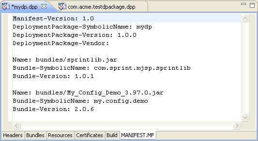

When creating a deployment package by means of a Deployment Package Project file, in its Manifest.mf tab the Deployment Package Editor provides a read-only view to the actual content of the manifest of a deployment package.
To modify the content of the package's manifest by using the Deployment Package Editor, use the options in the Headers, Bundles and Resources tabs.

Figure 1: Viewing the content of a package's manifest file.

Deployment Package Overview
Deployment Package Editor

Editing Manifest Headers
Adding Bundle Resources
Adding Processed Resources
Setting Signers of a Deployment Package